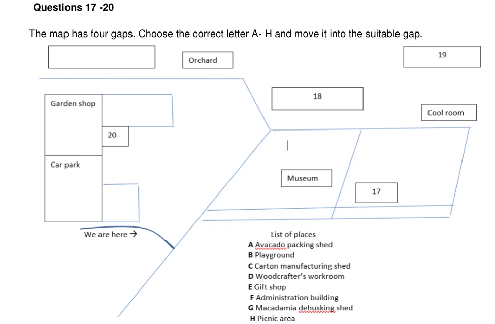
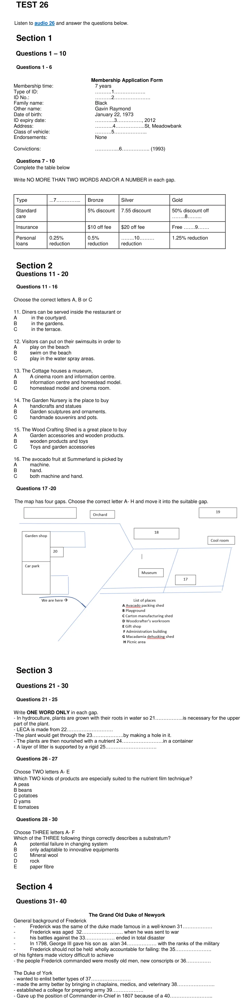

IELTS Listening: Test 26
Listening and questions
Section 1Questions 1–10
Questions 1–6
Membership Application Form
Membership time: 7 years
Type of ID: 1
ID No.: 2
Family name: Black
Other name: Gavin Raymond
Date of birth: January 22, 1973
ID expiry date: 3 , 2012
Address: 4 St, Meadowbank
Class of vehicle: 5
Endorsements: None
Convictions: 6 (1993)
Questions 7–10
Complete the table below Write NO MORE THAN TWO WORDS AND/OR A NUMBER in each gap.
| Type | 7 | Bronze | Silver | Gold |
| Standard care | 5% discount | 7.55 discount | 50% discount off 8 | |
| Insurance | $10 off fee | $20 off fee | Free 9 | |
| Personal loans | 0.25% reduction | 0.5% reduction | 10 reduction | 1.25% reduction |
Section 2Questions 11–20
Questions 11–16
Choose the correct letters A, B or C
11 Diners can be served inside the restaurant or
12 Visitors can put on their swimsuits in order to
13 The Cottage houses a museum,
14 The Garden Nursery is the place to buy
15 The Wood Crafting Shed is a great place to buy
16 The avocado fruit at Summerland is picked by

Section 3Questions 21–30
Questions 21–25
Write ONE WORD ONLY in each gap.
In hydroculture, plants are grown with their roots in water so 21 is necessary for the upper part of the plant.
LECA is made from 22
-The plant would get through the 23 by making a hole in it.
The plants are then nourished with a nutrient 24 in a container
A layer of litter is supported by a rigid 25
Questions 26–27
Choose TWO letters A- E
Which TWO kinds of products are especially suited to the nutrient film technique?
Questions 28–30
Choose THREE letters A- F
Which of the THREE following things correctly describes a substratum?
Section 4Questions 31–40
Questions 31–40
The Grand Old Duke of Newyork
General background of Frederick
Frederick was the same of the duke made famous in a well-known 31
Frederick was aged 32 when he was sent to war
his battles against the 33 ended in total disaster
In 1798, George III gave his son as a/an 34 with the ranks of the military
Frederick should not be held wholly accountable for failing: the 35 of his fighters made victory difficult to achieve
the people Frederick commanded were mostly old men, new conscripts or 36
The Duke of York
wanted to enlist better types of 37
made the army better by bringing in chaplains, medics, and veterinary 38
established a college for preparing army 39
Gave up the position of Commander-in-Chief in 1807 because of a 40
Show the original book pages (picture)

Tap or click the pages to open them full size in a new tab.
Check your answers
Marking ignores capital letters and accepts plurals and the usual alternative answers. If your answer is right but not accepted, press My answer is also right under it.
Tapescript
Check your answers first, then the tapescript opens here.